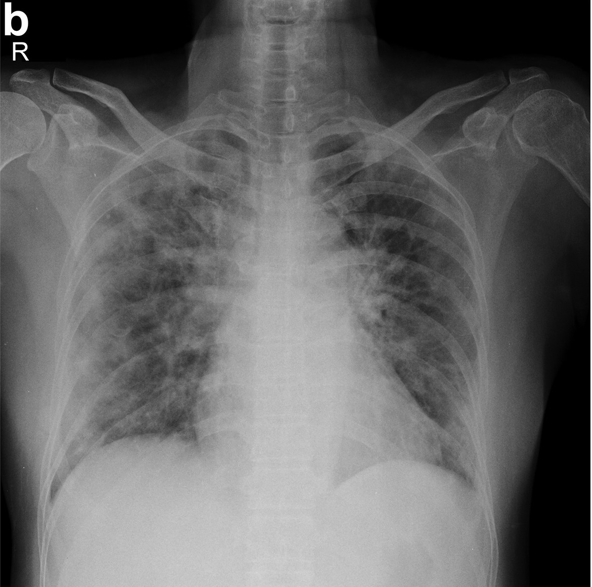

Descrierea
Acest Demo foloseste modelul antrenat folosind reteaua neuronala MobileNet_25_224. Gasiti codul aici. Radiografii cu Covid19 gasiti aici, iar imagini fara covid19 gasiti aici.
Autor Moșnoi Ion
Alatura-te grupului nostru pe facebook aici
Status
Model Output
